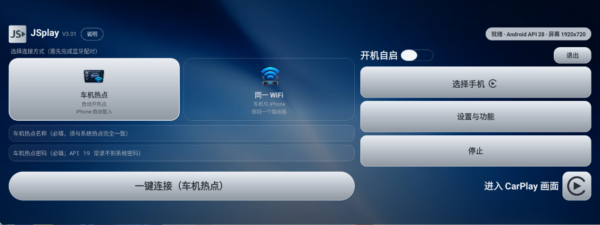

آيفونك.
على شاشة سيارتك.
JSPLAY هو منفذ CarPlay مصمم خصيصًا للسيارات الفرنسية (بيجو/سيتروين) المزودة بوحدات هانغشينغ ذات الشاشة الزرقاء الكبيرة. أصعب جزء - مصافحة البلوتوث - استغرق قرابة شهرين لحلها، وقد تم بالفعل دعم التحكم في المقود لسيارة سيتروين C5 X على أجهزة هانغشينغ. لا تزال قنوات الصوت وبث فيديو CarPlay قيد التحسين؛ يعمل TCP حاليًا على المنفذ 7000. نرحب بمساهمات المجتمع لتطوير منفذ أكثر سلاسة.
لا حاجة إلى جيلبريك أو قطعة خارجية أو حساب أو خادم مصادقة.
ثبّت التطبيق على شاشة السيارة، وليس الآيفون. يستخدم الاتصال اللاسلكي نقطة اتصال السيارة أو Wi-Fi Direct على أندرويد 10 فأحدث. يعتمد التوافق على الشاشة ونظامها وإصدار iOS.
مصمم خصيصًا للسيارات الفرنسية (بيجو/سيتروين) المزودة بوحدات هانغشينغ ذات الشاشة الزرقاء الكبيرة، وخاصة سيتروين C5 X. المركبات الأخرى غير مختبرة وغير مدعومة.
تجربة مألوفة



التثبيت على شاشة السيارة
- ابنِ التطبيق من المصدر باستخدام دليل البناء، ثم ثبّت ملف APK بالطريقة التي تدعمها شاشة سيارتك.
- افتح JSPLAY وامنح أذونات البلوتوث والواي فاي/الموقع والميكروفون المطلوبة.
- شغّل نقطة اتصال السيارة المدمجة واختر 5 غيغاهرتز إن توفر. من الإعدادات ← إعداد الاتصال، اختر نقطة اتصال السيارة وأدخل الاسم وكلمة المرور بدقة. أبقِ Wi-Fi وBluetooth مفعّلين على الهاتف، واقرنه بالسيارة، ثم اضغط توصيل الهاتف ووافق على الطلبات.
- للاتصال السلكي، استخدم كابل USB يدعم نقل البيانات واختر Connect with USB. وافق على طلبات USB أو الوثوق أو اتصال VPN المحلي إن ظهرت.
لا تحتاج إلى ADB للاستخدام اليومي. تختلف طريقة تثبيت APK حسب السيارة. لا حاجة لإدخال عنوان MAC يدوياً.
دليل التثبيت والمساعدة في الاتصال ↗في هذا الإصدار
- معلومات أغاني CarPlay وصور الألبومات في المشغّلات وشاشات الوسائط المتوافقة على أندرويد.
- اختيار منفذ AirPlay بديل إذا شغلت خدمة السيارة المنفذ المفضّل؛ معالجة نوع الأمان غير المعروف والقنوات المشغولة في Wi-Fi Direct.
- معالجة محددة لحشو USBMUX مع حفظ الإطارات المجزأة والمجمّعة؛ تشغيل USB حتى لو لم تكتمل إعدادات نقطة الاتصال اليدوية.
- تقليل الصدى والضوضاء في المكالمات بميزات أندرويد المدعومة، حسب شاشة السيارة.
- اختيار CAN أو CANFD لقراءة بطارية BYD عبر ADB الشبكي الحالي؛ القراءات المتاحة تعتمد على برنامج السيارة الثابت.
- إظهار أو إخفاء نسخة الخريطة على الشاشة الرئيسية مع إبقاء خريطة العدادات؛ ترجمات أوكرانية إضافية للخرائط والويدجت.
- فيديو اختياري مع شريط تقديم وتخطّي عشر ثوانٍ، فقط في P مع ADB الشبكي وبيانات ناقل حركة صالحة. فيديو FairPlay المحمي غير مدعوم.
- تشخيص محدود للبلوتوث وUSB وإعادة الاتصال والإقلاع والميكروفون، لتتبّع الأعطال دون تسجيل الصوت أو محتوى الحزم.
قبل التجربة
نسخة تجريبية عامة غير معتمدة من Apple. تستخدم المصادقة هوية ملحق تجريبية مستخرجة من برنامج ثابت منشور، ولا يُضمن استمرار قبولها مستقبلاً. قد يستمر التقطّع أو عدم تطبيق حجم الأيقونات على بعض الشاشات. ابدأ بمعدل 30 إطاراً مع تعطيل HEVC، وجرّب دقة أقل عند الحاجة.
تابع التحديثات
أخبار المشروع على تيليجرام.
نطاق المستودع
وحدة المصادقة دون اتصال ملكية خاصة وغير مضمّنة هنا. ننشر الطرق والواجهات فقط، ليتمكن المطورون الذين يفهمون النظام من بناء تنفيذ يناسب إعداداتهم. عميل المصادقة في الشيفرة يوضّح عقد الواجهة فقط ولا يحتوي على هوية أو بيانات اعتماد حقيقية. لا يتم توزيع حزمة تثبيت أو مفتاح توقيع أو هوية ملحق.
التحديثات والتوقيع
تُنتج البنيات محليًا من المصدر؛ لا يوزّع هذا المستودع حزم تثبيت أو مفاتيح توقيع. راجع دليل البناء.